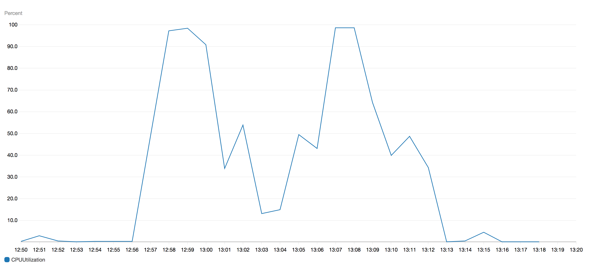

Julien Roy @vanr0y
Architecte Java
Timeline des événements ECS
Liste des tâches
Détail d'une tâche
Statistiques JVM
Dépendances
version: '3'
services:
postgresql:
image: postgres:10.1
ports:
- 5432:5432
hydra:
image: oryd/hydra:v1.0.0-beta.9
ports:
- 4444:4444
- 4445:4445
command:
serve all --dangerous-force-http
Lancement application
$ docker run -it -p 8080:8080 -p 1099:1099 \
-e JAVA_OPTS='
-Xms512m
-Xmx512m
-XX:MaxMetaspaceSize=128m
-XX:+UseG1GC
-XX:NativeMemoryTracking=summary
-Djava.rmi.server.hostname=localhost
-Dcom.sun.management.jmxremote
-Dcom.sun.management.jmxremote.port=1099 ' \
--memory 896m \
--memory-swap 896m \
--name quoteengine_service \
quoteengine_service
Simulation latences
$ docker run --name quoteengine_pumba_hydra_1 -d \
gaiaadm/pumba:master netem \
--duration 3600m delay --time 500 quoteengine_hydra_1
$ docker run --name quoteengine_pumba_postgresql_1 -d \
gaiaadm/pumba:master netem \
--duration 3600m --time 200 quoteengine_postgresql_1
Lancement des tests
Stats docker au lancement
Stats docker après 30s
Stats docker après 1min
Etat de l'application
Analyse mémoire
Recherche Bug JVM
Résolution
private static byte[] compress(byte[] data) throws IOException {
Deflater deflater = new Deflater();
deflater.setInput(data);
try (ByteArrayOutputStream outputStream = new ByteArrayOutputStream(data.length)) {
deflater.finish();
byte[] buffer = new byte[1024];
while (!deflater.finished()) {
int count = deflater.deflate(buffer);
outputStream.write(buffer, 0, count);
}
return outputStream.toByteArray();
} finally {
deflater.end();
}
}
Fuite mémoire résolue
Timeline des événements ECS
Graph CPU
Lancement des tests
Visualisation des threads
Threads dump
Code source
JwkDefinitionHolder getDefinitionLoadIfNecessary(String keyId) {
JwkDefinitionHolder result = this.getDefinition(keyId);
if (result != null) {
return result;
}
synchronized (this.jwkDefinitions) {
this.jwkDefinitions.clear();
for (URL jwkSetUrl : jwkSetUrls) {
this.jwkDefinitions.putAll(loadJwkDefinitions(jwkSetUrl));
}
return this.getDefinition(keyId);
}
}
Résolution
JwkDefinitionHolder getDefinitionLoadIfNecessary(String keyId) {
JwkDefinitionHolder result = this.getDefinition(keyId);
if (result != null) {
return result;
}
synchronized (this.jwkDefinitions) {
// Double-checked locking pattern
result = this.getDefinition(keyId);
if (result != null) {
return result;
}
this.jwkDefinitions.clear();
for (URL jwkSetUrl : jwkSetUrls) {
this.jwkDefinitions.putAll(loadJwkDefinitions(jwkSetUrl));
}
return this.getDefinition(keyId);
}
}
Race condition résolue
Connection DB
Requetes DB
Activation logs
logging:
level:
org.springframework.jdbc.core: TRACE
Logs Spring JDBC
Activation logs Driver
logging:
level:
org.postgresql.core.v3.QueryExecutorImpl: TRACE
Logs Driver Postgresql
Break point driver Posgresql
Résolution
@Service
@Transactional
@RequiredArgsConstructor
public class TaxService {
private final CacheManager cacheManager;
public List<GlobalTax> getGlobalTaxes(String countryCode) {
return Optional.ofNullable(getGlobalTaxCache().get(countryCode)).map(Cache.ValueWrapper::get).orElse(null);
}
private Cache getGlobalTaxCache() {
return cacheManager.getCache(CacheConfiguration.GLOBAL_TAX_CACHE_NAME);
}
Gestion du cache améliorée